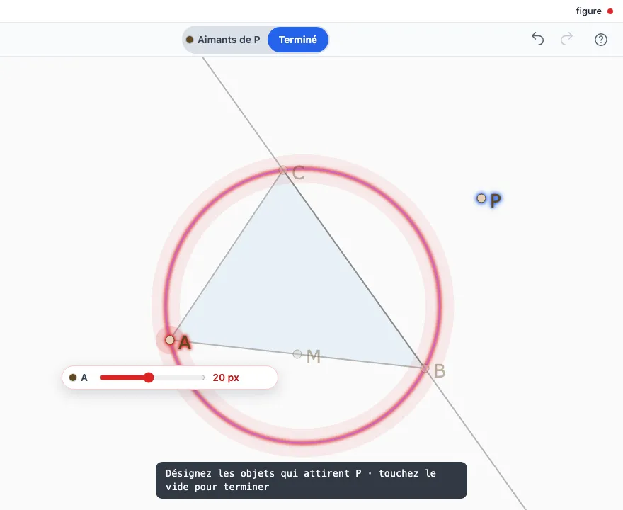

Aimants, punaise et ressort
Aimants
Un point libre aimanté se colle aux objets choisis quand on le glisse près d’eux, sans leur être lié.

- Sélectionner le point libre, puis Aimants. Le reste de la figure passe sous un voile.
- Toucher chaque objet attirant (point, droite, cercle, conique, courbe, liste) : il passe en rouge, attraction initiale 20 px. Le point et ses dépendants sont exclus.
- Régler l’attraction de l’aimant choisi par le curseur de sa carte : Aucune (retire l’aimant), 1 à 1 000 px, Partout. La zone d’attraction de chaque aimant est dessinée en rouge pâle.
- Terminer par un toucher dans le vide, Terminé ou Échap.
Le point se glisse pendant le réglage pour essayer. Chaque réglage est une étape d’annulation.
Punaise
Épingler à l’écran (point libre, figure plane) : le point garde sa place dans la fenêtre, et non ses coordonnées, quand on zoome ou déplace la vue. Il reste déplaçable. Second appui : retrait.
Ressort
Animer (point sur droite, segment, demi-droite, cercle, arc, polygone, conique ou lieu) sort sous le point un ressort terminé par une boule.
- Tirer la boule puis la lâcher lance le point ; pendant la traction, un fantôme du point montre déjà le mouvement.
- Longueur : vitesse, par crans affichés (px/s sur une droite, un polygone ou une conique ; °/s sur un cercle ; % sur un lieu).
- Côté : sens ; le point part à l’opposé de la traction.
- En travers d’une droite (plus de 45°) : aller-retour. Ailleurs, le point boucle.
- En deçà du premier cran : arrêt.
Sur un point déjà animé, le ressort sort tendu à la vitesse actuelle. Second appui sur : le ressort est rangé. Vitesse exacte, sens inverse, arrêt à l’extrémité : section Animation des propriétés, qui anime aussi les curseurs.